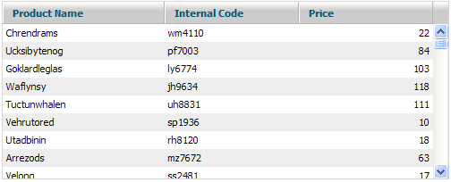

Step 3. Loading Data. Server Side Support for Smart Rendering
As you already know (if you've read the Introduction) there are two variants of Smart Rendering in dhtmlxGrid. We'll concentrate on more complex one, which allows you working with much bigger datasets. I mean Smart Rendering with Dynamic Loading. Below there are samples of server side code for creating an output XML based on incoming arguments and MySQL database for 4 most popular technologies. Load your variant of file with the following command (put it into script block right after mygrid.enableSmartRendering):
gridQString = "getGridRecords.php";//save query string to global variable (see step 5 for details) mygrid.loadXML(gridQString );
Sending the request to the URL you specify inside loadXML method, grid adds two properties: posStart - starting position of record in the dataset (if this property was skipped, then it returns records from the beginning of the dataset); count - number of records to be returned with XML. Thus GET request which comes to the server will look something like this: getGridRecords.php?posStart=199&count=100 .
Sample of Server-Side Code. PHP.
<?php //set content type and xml tag header("Content-type:text/xml"); print("<?xml version=\"1.0\"?>"); //define variables from incoming values if(isset($_GET["posStart"])) $posStart = $_GET['posStart']; else $posStart = 0; if(isset($_GET["count"])) $count = $_GET['count']; else $count = 100; //connect to database $link = mysql_pconnect("localhost", "user", "pwd"); $db = mysql_select_db ("sampleDB"); //create query to products table $sql = "SELECT * FROM products"; //if this is the first query - get total number of records in the query result if($posStart==0){ $sqlCount = "Select count(*) as cnt from ($sql) as tbl"; $resCount = mysql_query ($sqlCount); $rowCount=mysql_fetch_array($resCount); $totalCount = $rowCount["cnt"]; } //add limits to query to get only rows necessary for the output $sql.= " LIMIT ".$posStart.",".$count; //query database to retrieve necessary block of data $res = mysql_query ($sql); //output data in XML format print("<rows total_count='".$totalCount."' pos='".$posStart."'>"); while($row=mysql_fetch_array($res)){ print("<row id='".$row['id']."'>"); print("<cell>"); print($row['nm']); //value for product name print("</cell>"); print("<cell>"); print($row['code']); //value for internal code print("</cell>"); print("<cell>"); print($row['num_val']); //value for price print("</cell>"); print("</row>"); } print("</rows>"); ?> * - sample code was simplified to concentrate you on the main commands. Some necessary error handlers etc. were omitted.
Sample of Server Side Code. JSP.
<%@ page import = "java.sql.*" %> <% String db_ipp_addr = "localhost"; String db_username = "root"; String db_password = "1"; String db_name = "sampleDB"; // set content type and xml tag response.setContentType("text/xml"); out.println("<?xml version=\"1.0\" encoding=\"UTF-8\"?>"); // define variables from incoming values String posStart = ""; if (request.getParameter("posStart") != null){ posStart = request.getParameter("posStart"); }else{ posStart = "0"; } String count = ""; if (request.getParameter("count") != null){ count = request.getParameter("count"); }else{ count = "100"; } // connect to database Connection connection = null; Statement statement = null; ResultSet rs = null; String connectionURL = "jdbc:mysql://" + db_ipp_addr + ":3306/" + db_name; Class.forName("com.mysql.jdbc.Driver").newInstance(); connection = DriverManager.getConnection(connectionURL, db_username, db_password); // query to products table String sql = "SELECT * FROM products"; // if this is the first query - get total number of records in the query result String totalCount = ""; if (posStart.equals("0")){ String sqlCount = "Select count(*) as cnt from (" + sql + ") as tbl"; statement = connection.createStatement(); rs = statement.executeQuery(sqlCount); rs.next(); totalCount = rs.getString("cnt"); rs.close(); } else { totalCount = ""; } // add limits to query to get only rows necessary for output sql += " LIMIT " + posStart + "," + count; // Execute the query statement = connection.createStatement(); rs = statement.executeQuery(sql); // output data in XML format out.println("<rows total_count='" + totalCount + "' pos='" + posStart + "'>"); while (rs.next()) { out.println("<row id='" + rs.getString("id") + "'>"); out.println("<cell>"); out.println(rs.getString("nm")); // value for product name out.println("</cell>"); out.println("<cell>"); out.println(rs.getString("code")); // value for internal code out.println("</cell>"); out.println("<cell>"); out.println(rs.getString("num_val")); // value for price out.println("</cell>"); out.println("</row>"); } out.write("</rows>"); rs.close(); %>
Sample of Server Side Code. ASP
<%@ LANGUAGE = VBScript %> <% option explicit %> <% Dim db_ipp_addr, db_username, db_password, db_name db_ipp_addr = "localhost" db_username = "root" db_password = "1" db_name = "sampleDB" ' set content type and xml tag Response.ContentType = "text/xml" Response.write("<?xml version=""1.0"" encoding=""UTF-8""?>") ' define variables from incoming values Dim posStart, count If not isEmpty(Request.QueryString("posStart")) Then posStart = Request.QueryString("posStart") Else posStart = 0 End If If not isEmpty(Request.QueryString("count")) Then count = Request.QueryString("count") Else count = 100 End If ' connect to database Dim objConnection, rs, connString, sql Set objConnection = Server.CreateObject("ADODB.Connection") Set rs = Server.CreateObject("ADODB.Recordset") connString = "DRIVER={MySQL ODBC 3.51 Driver}; SERVER=" & db_ipp_addr & "; DATABASE=" & db_name & "; UID=" & db_username & "; PWD=" & db_password objConnection.Open connString ' query to products table sql = "SELECT * FROM products" ' if this is the first query - get total number of records in the query result Dim sqlCount, totalCount If posStart = 0 Then sqlCount = "Select count(*) as cnt from (" & sql & ") as tbl" rs.Open sqlCount, objConnection totalCount = rs("cnt") rs.Close Else totalCount = "" End If ' add limits to query to get only rows necessary for output sql = sql & " LIMIT " & posStart & "," & count ' Execute the query rs.Open sql, objConnection ' output data in XML format Response.write("<rows total_count='" & totalCount & "' pos='" & posStart & "'>") Do while not rs.EOF Response.write("<row id='" & rs("id") & "'>") Response.write("<cell>") Response.write(rs("nm")) ' value for product name Response.write("</cell>") Response.write("<cell>") Response.write(rs("code")) ' value for internal code Response.write("</cell>") Response.write("<cell>") Response.write(rs("num_val")) ' value for price Response.write("</cell>") Response.write("</row>") rs.MoveNext Loop Response.write("</rows>") rs.Close Set rs = Nothing objConnection.Close Set objConnection = Nothing %>
Sample of Server Side Code. Cold Fusion.
<cfset dsn = "sampleDB"> <cfsetting enablecfoutputonly="yes"> <!--- set content type and xml tag ---> <cfcontent reset="yes" type="text/xml; charset=UTF-8"><cfoutput><?xml version="1.0"?></cfoutput> <!--- define variables from incoming values ---> <cfif isDefined("url.posStart")> <cfset posStart = url.posStart> <cfelse> <cfset posStart = 0> </cfif> <cfif isDefined("url.count")> <cfset count = url.count> <cfelse> <cfset count = 100> </cfif> <!--- if this is the first query - get total number of records in the query result ---> <cfif posStart eq 0> <cfquery datasource="#dsn#" name="getCount"> Select count(*) as cnt FROM products </cfquery> <cfset totalCount = getCount.cnt> <cfelse> <Cfset totalCount = ""> </cfif> <!--- query to products table ---> <cfquery datasource="#dsn#" name="getRecords"> SELECT * FROM products <!--- add limits to query to get only rows necessary for output ---> LIMIT #posStart#, #count# </cfquery> <!--- output data in XML format ---> <cfoutput><rows total_count="#totalCount#" pos="#posStart#"></cfoutput> <cfloop query="getRecords"> <cfoutput><row id="#getRecords.id#"></cfoutput> <!--- value for product name ---> <cfoutput><cell>#getRecords.nm#</cell></cfoutput> <!--- value for internal code ---> <cfoutput><cell>#getRecords.code#</cell></cfoutput> <!--- value for price ---> <cfoutput><cell>#getRecords.num_val#</cell></cfoutput> <cfoutput></row></cfoutput> </cfloop> <cfoutput></rows></cfoutput>
After loading the file the grid will look something like in the picture below. When you stop scrolling the grid will load and draw a new portion of records.
